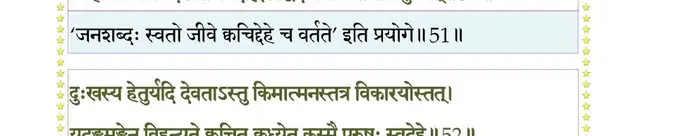

स्कन्ध 11 · अध्याय 23
श्लोक १
श्री शुक उवाच–
स एवमाशंसित उद्धवेन भागवतमुख्येन दशार्हवर्यः ।
सभाजयन् भृत्यवचो मुकुन्दस्तमावभाषे श्रवणीयवीर्यः।। १ ।।
स एवमाशंसित उद्धवेन भागवतमुख्येन दशार्हवर्यः ।
सभाजयन् भृत्यवचो मुकुन्दस्तमावभाषे श्रवणीयवीर्यः।। १ ।।
श्लोक २
श्रीभगवानुवाच–
बाह्यान्तर्भज(र्भर्ज,र्भञ्ज)नो ह्यत्र साधुर्वै दुर्जनेरितैः ।
दुरुक्तैर्भिन्नमात्मानं यः समाधातुमीश्वरः ।। २ ।।
बाह्यान्तर्भज(र्भर्ज,र्भञ्ज)नो ह्यत्र साधुर्वै दुर्जनेरितैः ।
दुरुक्तैर्भिन्नमात्मानं यः समाधातुमीश्वरः ।। २ ।।
श्लोक ३
न तथा तप्यते विद्धः पुमान् बाणैर्हि मर्मगैः ।
यथा तुदन्ति मर्मस्था असतां परुषेषवः ।। ३ ।।
यथा तुदन्ति मर्मस्था असतां परुषेषवः ।। ३ ।।
श्लोक ४
कथयन्ति महापुण्यमितिहासमिहोद्धव ।
तमहं वर्णयिष्यामि निबोध सुसमाहितः ।। ४ ।।
तमहं वर्णयिष्यामि निबोध सुसमाहितः ।। ४ ।।
श्लोक ५
केनचिद् भिक्षुणा गीतं परिभूतेन दुर्जनैः ।
स्मरता धृतियुक्तेन विपाकं निजकर्मणः ।। ५ ।।
स्मरता धृतियुक्तेन विपाकं निजकर्मणः ।। ५ ।।
श्लोक ६
अवन्तीषु द्विजः कश्चिदासीदाढ्यतमः श्रिया ।
वार्तावृत्तिः कदर्यस्तु कामी लुब्धोऽतिकोपनः ।। ६ ।।
वार्तावृत्तिः कदर्यस्तु कामी लुब्धोऽतिकोपनः ।। ६ ।।
श्लोक ७
ज्ञातयोऽतिथयस्तस्य वाङ्मात्रेणाप्यनर्चिताः ।
शून्यावसथ आत्माऽपि काले कामैरनर्चितः ।। ७ ।।
शून्यावसथ आत्माऽपि काले कामैरनर्चितः ।। ७ ।।
श्लोक ८
दुःशीलस्य कदर्यस्य द्रुह्यतः पुत्रबान्धवान् ।
दारा दुहितरो भृत्या विषण्णा नाचरन् प्रियम् ।। ८ ।।
दारा दुहितरो भृत्या विषण्णा नाचरन् प्रियम् ।। ८ ।।
श्लोक ९
तस्यैवं यक्षवित्तस्य च्युतस्योभयलोकतः ।
धर्मकामविहीनस्य चुक्रुधुः पञ्चभागिनः ।। ९ ।।
धर्मकामविहीनस्य चुक्रुधुः पञ्चभागिनः ।। ९ ।।
श्लोक १०
तदव(ज्ञान)ध्यानविस्रस्तपुण्यस्कन्धस्य भूरिद ।
अर्थोऽप्यगच्छन्निधनं बह्वायास(परिभ्रमात्) (परिश्रमः)परिष्कृतः ।। १० ।।
अर्थोऽप्यगच्छन्निधनं बह्वायास(परिभ्रमात्) (परिश्रमः)परिष्कृतः ।। १० ।।
श्लोक ११
ज्ञातयो जगृहुः किञ्चित् किञ्चिद् दस्यव उद्धव ।
दैवतः कालतः किञ्चिद् ब्रह्मबन्धोर्नृपार्थिवात् ।। ११ ।।
दैवतः कालतः किञ्चिद् ब्रह्मबन्धोर्नृपार्थिवात् ।। ११ ।।
श्लोक १२
स एवं द्रविणे नष्टे धर्मकामविवर्जितः ।
उपेक्षितश्च स्वजनैश्चिन्तामाप दुरत्ययाम् ।। १२ ।।
उपेक्षितश्च स्वजनैश्चिन्तामाप दुरत्ययाम् ।। १२ ।।
श्लोक १३
तस्यैवं ध्यायतो दीर्घमगादायुस्तपस्विनः ।
खिद्यतो बाष्पकण्ठस्य निर्वेदः सुमहानभूत् ।। १३ ।।
खिद्यतो बाष्पकण्ठस्य निर्वेदः सुमहानभूत् ।। १३ ।।
श्लोक १४
स चाहेदमहो कष्टं वृथाऽऽत्मा मे सुतापितः ।
न धर्माय न कामाय यस्यार्थायास ईदृशः ।। १४ ।।
न धर्माय न कामाय यस्यार्थायास ईदृशः ।। १४ ।।
श्लोक १५
प्रायेणार्थः कदर्याणां न सुखाय कदाचन ।
इह चात्मोपतापाय मृतस्य नरकाय च ।। १५ ।।
इह चात्मोपतापाय मृतस्य नरकाय च ।। १५ ।।
श्लोक १६
यशो यशस्विनां शुद्धं श्लाघ्या ये गुणिनां गुणाः ।
लोभः स्वल्पोऽपि तान् हन्ति श्वित्रो रूपमिवेप्सितम्।। १६ ।।
लोभः स्वल्पोऽपि तान् हन्ति श्वित्रो रूपमिवेप्सितम्।। १६ ।।
श्लोक १७
अर्थस्य साधने सिद्ध उत्कर्षे रक्षणे व्यये ।
नाशोपभोग आयासस्त्रासश्चिन्ता भ्रमो नृणाम् ।। १७ ।।
नाशोपभोग आयासस्त्रासश्चिन्ता भ्रमो नृणाम् ।। १७ ।।
श्लोक १८
स्तेयं हिंसाऽनृतं दम्भः कामः क्रोधः स्मयो मदः ।
भेदो वैरमविश्वासः संस्पर्धा व्यसनानि च ।। १८ ।।
भेदो वैरमविश्वासः संस्पर्धा व्यसनानि च ।। १८ ।।
श्लोक १९
एते पञ्चदशानर्था ह्यर्थमूला मता नृणाम् ।
तस्मादनर्थमर्थाख्यं श्रेयोर्थी दूरतस्त्यजेत् ।। १९ ।।
तस्मादनर्थमर्थाख्यं श्रेयोर्थी दूरतस्त्यजेत् ।। १९ ।।
श्लोक २०
भिद्यन्ते भ्रातरो दाराः पितरः सुहृदस्तथा ।
एकयाऽर्थेच्छया सद्यः सर्वे चाप्यरयः कृताः।। २० ।।
एकयाऽर्थेच्छया सद्यः सर्वे चाप्यरयः कृताः।। २० ।।
श्लोक २१
अर्थेनाल्पीयसा ह्येते संरब्धा दीप्तमन्यवः ।
त्यजन्त्यसून् वृथा घ्नन्ति सहसोत्सृज्य सौहृदम्।। २१ ।।
त्यजन्त्यसून् वृथा घ्नन्ति सहसोत्सृज्य सौहृदम्।। २१ ।।
श्लोक २२
लब्ध्वा जन्मामरैः प्रार्थ्यं मानुष्यं तद् द्विजाग्य्रताम् ।
तदनादृत्य ये सर्वं घ्नन्ति यान्त्यशुभां गतिम्।। २२ ।।
तदनादृत्य ये सर्वं घ्नन्ति यान्त्यशुभां गतिम्।। २२ ।।
श्लोक २३
स्वर्गापवर्गयोर्द्वारं प्राप्य लोकमिमं पुमान् ।
द्रविणे कोऽनुषज्जेत मर्त्योऽनर्थस्य धामनि।। २३ ।।
द्रविणे कोऽनुषज्जेत मर्त्योऽनर्थस्य धामनि।। २३ ।।
श्लोक २४
देवर्षिपितृभूतानि ज्ञातीनन्यांश्च भागिनः ।
असंविभज्य चात्मानं यक्षवित्तः पतत्यधः ।। २४ ।।
असंविभज्य चात्मानं यक्षवित्तः पतत्यधः ।। २४ ।।
श्लोक २५
व्यर्थयाऽर्थेहया वित्तं प्रमत्तस्य वयो बलम् ।
कुशलाय न सिध्यन्ति जरठः किन्नु साधयेत् ।। २५ ।।
कुशलाय न सिध्यन्ति जरठः किन्नु साधयेत् ।। २५ ।।
श्लोक २६
तस्मात् संक्लिश्यतेऽविद्वान् व्यर्थयाऽर्थेहयाऽसकृत् ।
कस्यचिन्मायया नूनं लोकोऽयं सुविमोहितः।। २६ ।।
कस्यचिन्मायया नूनं लोकोऽयं सुविमोहितः।। २६ ।।
श्लोक २७
किं धनैर्धनदैर्वा किं कामैर्वा कामदैरुत ।
मृत्युना ग्रस्यमानस्य कर्मभिर्वेति जन्मदैः (जन्मभिः)।। २७ ।।
मृत्युना ग्रस्यमानस्य कर्मभिर्वेति जन्मदैः (जन्मभिः)।। २७ ।।
श्लोक २८
नूनं मे भगवांस्तुष्टः सर्वदेवमयो हरिः ।
येन नीतो दशामेतां निर्वेदश्चात्मनः प्लवः।। २८ ।।
येन नीतो दशामेतां निर्वेदश्चात्मनः प्लवः।। २८ ।।
श्लोक २९
सोऽहं कालावशेषेण शोषयिष्येऽङ्गमात्मनः ।
अप्रमत्तोऽखिलार्थेषु यदि स्यां सिद्ध आत्मनि ।। २९ ।।
अप्रमत्तोऽखिलार्थेषु यदि स्यां सिद्ध आत्मनि ।। २९ ।।
श्लोक ३०
तत्र मामनुमोदेरन् देवास्त्रिभुवनेश्वराः ।
मुहूर्तेन ब्रह्मलोकं खट्वाङ्गः समसाधयत् ।। ३० ।।
मुहूर्तेन ब्रह्मलोकं खट्वाङ्गः समसाधयत् ।। ३० ।।
श्लोक ३१
श्रीभगवानुवाच–
इत्यभिप्रेत्य मनसा ह्यावन्त्यो द्विजसत्तमः ।
उन्मुच्य हृदयग्रन्थिं शान्तो भिक्षुरभून्मुनिः।। ३१ ।।
इत्यभिप्रेत्य मनसा ह्यावन्त्यो द्विजसत्तमः ।
उन्मुच्य हृदयग्रन्थिं शान्तो भिक्षुरभून्मुनिः।। ३१ ।।
श्लोक ३२
स चचार महीमेतां संयतात्मेन्द्रियानलः ।
भिक्षार्थं नगरग्रामानसङ्गोऽलक्षितोऽविशत्।। ३२ ।।
भिक्षार्थं नगरग्रामानसङ्गोऽलक्षितोऽविशत्।। ३२ ।।
श्लोक ३३
तं वै प्रवयसं भिक्षुमवधूतमसज्जनाः ।
दृप्ताः पर्यभवन् भद्र बह्वीभिः परिभूतिभिः ।। ३३ ।।
दृप्ताः पर्यभवन् भद्र बह्वीभिः परिभूतिभिः ।। ३३ ।।
श्लोक ३४
केचित् त्रिवेणुं जगृहुरेके पात्रं कमण्डलुम् ।
पीठं चैकेऽक्षसूत्रं च कन्थां चीराणि केचन ।। ३४ ।।
पीठं चैकेऽक्षसूत्रं च कन्थां चीराणि केचन ।। ३४ ।।
श्लोक ३५
प्रदाय च पुनस्तानि दर्शितान्याददुर्मुनेः ।
अन्नं च भैक्षसम्पन्नं भुञ्जानस्य सरित्तटे ।। ३५ ।।
अन्नं च भैक्षसम्पन्नं भुञ्जानस्य सरित्तटे ।। ३५ ।।
श्लोक ३६
मूत्रयन्ति च पापिष्ठा निष्ठीवन्त्यस्य मूर्धनि ।
यतवाचं वाचयन्ति ताडयन्ति न वक्ति चेत् ।। ३६ ।।
यतवाचं वाचयन्ति ताडयन्ति न वक्ति चेत् ।। ३६ ।।
श्लोक ३७
तर्जयन्त्यपरे वाग्भिः स्तेनोऽयमिति वादिनः ।
बध्नन्ति रज्ज्वा तं केचिद् बध्यतां वध्यतामिति ।। ३७ ।।
बध्नन्ति रज्ज्वा तं केचिद् बध्यतां वध्यतामिति ।। ३७ ।।
श्लोक ३८
क्षिपन्त्येकेऽवजानन्त एष धर्मध्वजः शठः ।
क्षीणवृत्त इमां वृत्तिमगृहीत् स्वजनोज्झितः ।। ३८ ।।
क्षीणवृत्त इमां वृत्तिमगृहीत् स्वजनोज्झितः ।। ३८ ।।
श्लोक ३९
अहो एष महासारो धृतिमान् गिरिराडिव ।
मौनेन साधयत्यर्थं बकवद् दृढनिश्चयः ।। ३९ ।।
मौनेन साधयत्यर्थं बकवद् दृढनिश्चयः ।। ३९ ।।
श्लोक ४०
इत्येके विहसन्त्येनमेके दौर्वादयन्ति च ।
तं बबन्धुर्निरुरुधुर्यथा क्रीडनकं द्विजम् ।। ४० ।।
तं बबन्धुर्निरुरुधुर्यथा क्रीडनकं द्विजम् ।। ४० ।।
श्लोक ४१
एवं स भौतिकं दुःखं दैविकं दैहिकं च यत् ।
भोक्तव्यमात्मनो(ऽनिष्टं) दिष्टं प्राप्तं प्राप्तमबुध्यत।। ४१ ।।
भोक्तव्यमात्मनो(ऽनिष्टं) दिष्टं प्राप्तं प्राप्तमबुध्यत।। ४१ ।।
श्लोक ४२
परिभूत इमां गा(धा)थामगायत नराधमैः ।
पातयद्भिः स्वधर्मस्थो धृतिमास्थाय सात्विकीम्।। ४२ ।।
पातयद्भिः स्वधर्मस्थो धृतिमास्थाय सात्विकीम्।। ४२ ।।
श्लोक ४३
भिक्षुरुवाच–
नायं जनो मे सुखदुःखहेतुर्न देवतात्मा ग्रहकर्मकालाः ।
मनः परं कारणमामनन्ति संसारचक्रं परिवर्तयेद् यत्।। ४३ ।।
नायं जनो मे सुखदुःखहेतुर्न देवतात्मा ग्रहकर्मकालाः ।
मनः परं कारणमामनन्ति संसारचक्रं परिवर्तयेद् यत्।। ४३ ।।
श्लोक ४४
मनो गुणान् वै सृजते बलीयस्ततश्च कर्माणि विलक्षणानि ।
शुक्लानि कृष्णान्यथ लोहितानि तेभ्यः सवर्णा गतयो भवन्ति।।४४।।
शुक्लानि कृष्णान्यथ लोहितानि तेभ्यः सवर्णा गतयो भवन्ति।।४४।।
श्लोक ४५
अनीह आत्मा मनसा(मनसः) समीहितं
हिरण्मयो मत्सख उद्विचष्टे ।
मनः स्वलिङ्गं परिगृह्य (प्रतिगृह्य) कामान्
जुषन् निबद्धो गुणसङ्गतोऽसौ ।। ४५ ।।
हिरण्मयो मत्सख उद्विचष्टे ।
मनः स्वलिङ्गं परिगृह्य (प्रतिगृह्य) कामान्
जुषन् निबद्धो गुणसङ्गतोऽसौ ।। ४५ ।।
श्लोक ४६
दानं स्वधर्मो नियमो यमश्च श्रुतानि कर्माणि च सद्व्रतानि ।
सर्वे मनोनिग्रहलक्षणान्ताः परो हि योगो मनसः समाधिः।।४६।।
सर्वे मनोनिग्रहलक्षणान्ताः परो हि योगो मनसः समाधिः।।४६।।
श्लोक ४७
समाहितं यस्य मनः प्रशान्तं दानादिभिः किं वद तस्य कृत्यम् ।
असंयतं यस्य मनो विनश्येद् दानादिभिश्चेदपरं किमेभिः।। ४७ ।।
असंयतं यस्य मनो विनश्येद् दानादिभिश्चेदपरं किमेभिः।। ४७ ।।
श्लोक ४९
मनोवशेऽन्ये हि भवन्ति देवा मनश्च नान्यस्य वशं समेति ।
भीमो हि देवः सहसः सहीयान्नात्याविशत् तत् स हि देवदेवः ।।४८
तं दुर्जयं शुत्रुमसह्यवेगमरुन्तुदं तन्न विजित्य केचित् ।
कुर्वन्त्यसद्विग्रहमत्र मर्त्यैः मित्रैरुदासीनरिपुं विमूढाः।। ४९ ।।
भीमो हि देवः सहसः सहीयान्नात्याविशत् तत् स हि देवदेवः ।।४८
तं दुर्जयं शुत्रुमसह्यवेगमरुन्तुदं तन्न विजित्य केचित् ।
कुर्वन्त्यसद्विग्रहमत्र मर्त्यैः मित्रैरुदासीनरिपुं विमूढाः।। ४९ ।।
श्लोक ५०
देहं मनोमात्रमिदं गृहीत्वा ममाहमित्यन्धधियो मनुष्याः ।
एषोऽहमन्योऽयमिति भ्रमेण दुरन्तपारे तमसि भ्रमन्ति।। ५० ।।
एषोऽहमन्योऽयमिति भ्रमेण दुरन्तपारे तमसि भ्रमन्ति।। ५० ।।
श्लोक ५१
जनोऽस्य हेतुः सुखदुःखयोश्चेत् किमात्मनश्चात्र हि भौमयोस्तत् ।
जिह्वां क्वचित् सन्दशति स्वदद्भिः तद्वेदनायां कतमाय कुप्येत्।।५१।।
जिह्वां क्वचित् सन्दशति स्वदद्भिः तद्वेदनायां कतमाय कुप्येत्।।५१।।
भागवततात्पर्यनिर्णय

श्लोक ५२
दुःखस्य हेतुर्यदि देवताऽस्तु किमात्मनस्तत्र विकारयोस्तत् ।
यदङ्गमङ्गेन विहन्यते क्वचित् क्रुध्येत कस्मै पुरुषः स्वदेहे।। ५२ ।।
यदङ्गमङ्गेन विहन्यते क्वचित् क्रुध्येत कस्मै पुरुषः स्वदेहे।। ५२ ।।
श्लोक ५३
आत्मा यदि स्यात् सुखदुःखहेतुः
किमन्यतस्तत्र निजः स्वभावः ।
न ह्यात्मनोऽन्यद् यदि तन्मृषा स्याद्
क्रुध्येत कस्मै न सुखं न दुःखम्।। ५३ ।।
किमन्यतस्तत्र निजः स्वभावः ।
न ह्यात्मनोऽन्यद् यदि तन्मृषा स्याद्
क्रुध्येत कस्मै न सुखं न दुःखम्।। ५३ ।।
श्लोक ५४
ग्रहा निमित्तं सुखदुःखयोश्चेत् किमात्मनोऽजस्य जनस्य ते वै ।
ग्रहैर्ग्रहस्यैव भवन्ति पीडाः क्रुध्येत कस्मै पुरुषस्ततोऽन्यः।। ५४ ।।
ग्रहैर्ग्रहस्यैव भवन्ति पीडाः क्रुध्येत कस्मै पुरुषस्ततोऽन्यः।। ५४ ।।
श्लोक ५६
कर्मास्तु हेतुः सुखदुःखयोर्वै किमात्मनस्तद् हि जडेऽजडत्वे ।
देहे स्ववित् पुरुषोऽयं सुपर्णः क्रुध्येत कस्मै न हि कर्म मूलम् ।।५५
कालोऽस्तु हेतुः सुखदुःखयोश्चेत् किमात्मनस्तत्र तदात्मनोऽसौ ।
नाग्नेर्हि तापो न हिमस्य तत् स्यात् क्रुध्येत कस्मै न परस्य बोद्धुः ।। ५६ ।।
देहे स्ववित् पुरुषोऽयं सुपर्णः क्रुध्येत कस्मै न हि कर्म मूलम् ।।५५
कालोऽस्तु हेतुः सुखदुःखयोश्चेत् किमात्मनस्तत्र तदात्मनोऽसौ ।
नाग्नेर्हि तापो न हिमस्य तत् स्यात् क्रुध्येत कस्मै न परस्य बोद्धुः ।। ५६ ।।
श्लोक ५७
न केनचित् क्वापि कथञ्चनास्य द्वन्द्वोपरागः परतः परस्य ।
यथाऽत्मनः संसृतिरूपिणः स्यात् एवं प्रबुद्धो न बिभेति भूतैः ।। ५७ ।।
यथाऽत्मनः संसृतिरूपिणः स्यात् एवं प्रबुद्धो न बिभेति भूतैः ।। ५७ ।।
श्लोक ५८
एतां समास्थाय परात्मनिष्ठामध्यासितां पूर्वतनैर्महर्षिभिः ।
अहं तरिष्यामि दुरन्तपारं तमो मुकुन्दाङ्घ्रिनिषेवयैव।। ५८ ।।
अहं तरिष्यामि दुरन्तपारं तमो मुकुन्दाङ्घ्रिनिषेवयैव।। ५८ ।।
श्लोक ५९
श्रीभगवानुवाच–
निर्विद्य नष्टद्रविणो गतक्लमः प्रव्रज्य गां पर्यटमान इत्थम् ।
निराकृतोऽसद्भिरपि स्वधर्मादकम्पितोऽसौ मुनिराह गाथाम् ।। ५९ ।।
निर्विद्य नष्टद्रविणो गतक्लमः प्रव्रज्य गां पर्यटमान इत्थम् ।
निराकृतोऽसद्भिरपि स्वधर्मादकम्पितोऽसौ मुनिराह गाथाम् ।। ५९ ।।
श्लोक ६०
सुखदुःखप्रदो नान्यः पुरुषस्यात्मविभ्रमः ।
मित्रोदासीनरिपवः संसारः स्वमनस्ततः ।। ६० ।।
मित्रोदासीनरिपवः संसारः स्वमनस्ततः ।। ६० ।।
श्लोक ६१
तस्मात् सर्वात्मना तात निगृहाण मनो धिया ।
मय्यावेशितया युक्त एतावान् योगसङ्ग्रहः ।। ६१ ।।
मय्यावेशितया युक्त एतावान् योगसङ्ग्रहः ।। ६१ ।।
श्लोक ६२
य एतां भिक्षुणा गीतां ब्रह्मनिष्ठां समाहितः ।
धारयन् श्रावयन् शृण्वन् द्वन्द्वैर्नैवाभिभूयते ।। ६२ ।।
धारयन् श्रावयन् शृण्वन् द्वन्द्वैर्नैवाभिभूयते ।। ६२ ।।
।। इति श्रीमद्भागवते एकादशस्कन्धे त्रयोविंशोऽध्यायः ।।